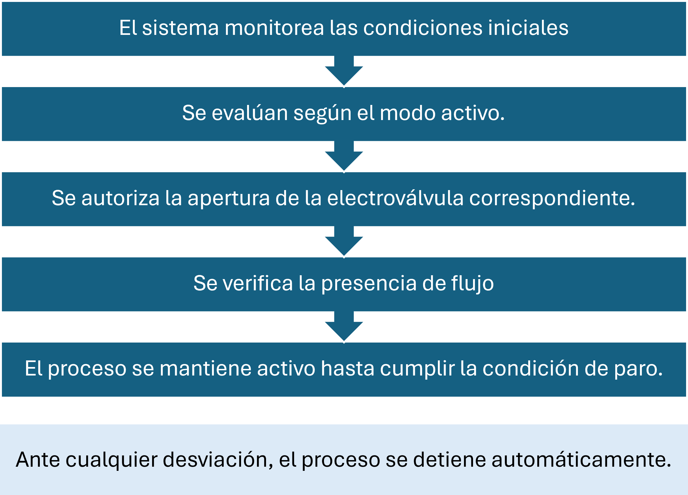
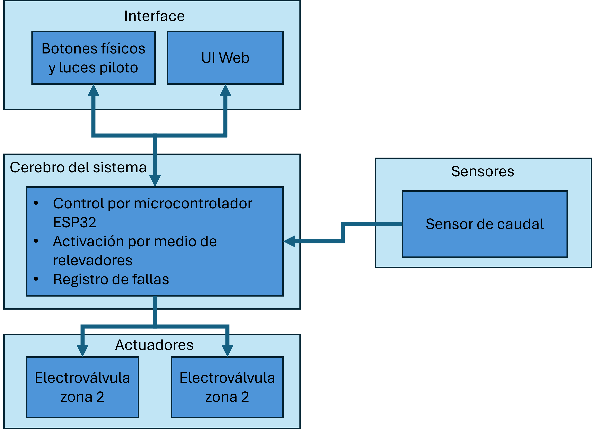
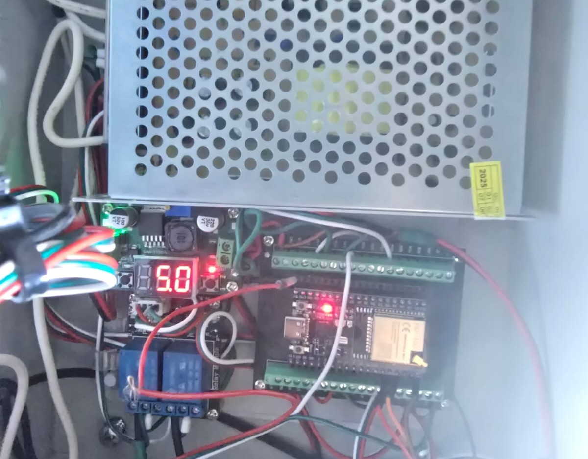
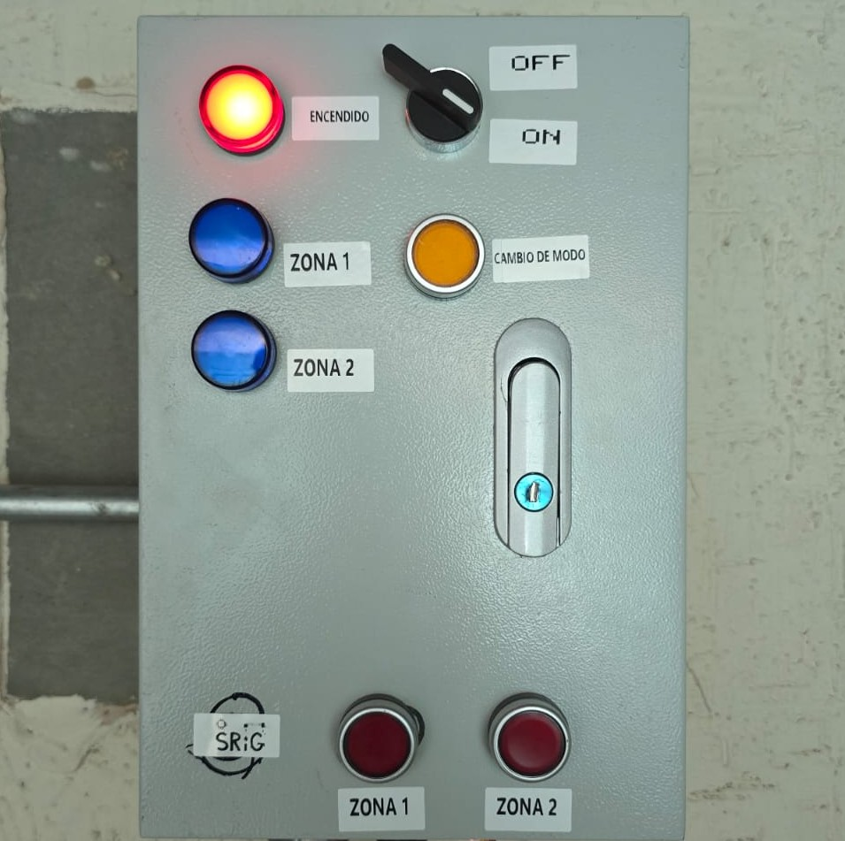
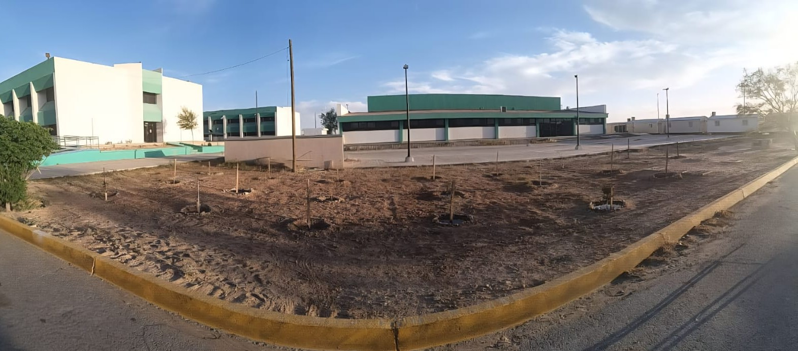

¿Qué es el SRIG?
SRIG (Sistema de Riego Inteligente por Goteo) es un proyecto académico desarrollado como parte de una integradora del IPIW32, perteneciente a la carrera de Procesos y Operaciones Industriales, implementado para controlar el riego de una área específica dentro de la Universidad Tecnológica de Ciudad Juárez (UTCJ).
El sistema fue diseñado con fines educativos, demostrativos y de integración tecnológica. No se trata de un producto comercial ni de un sistema de uso general.
Propósito del proyecto
El SRIG tiene como propósito integrar los conocimientos adquiridos en la carrera de Procesos y Operaciones Industriales, tales como:
- Control y monitoreo de procesos
- Automatización básica de operaciones
- Uso eficiente de recursos
- Gestión de condiciones seguras de operación
- Estandarización de la operación del riego
El sistema se desarrolló como un ejercicio práctico de análisis, diseño e implementación de un proceso automatizado en un entorno real.
Este proyecto permite analizar un sistema real desde la perspectiva de planeación, ejecución, control y mejora de procesos, alineado con los objetivos formativos de la carrera de Procesos y Operaciones Industriales.
¿Qué hace el sistema?
El SRIG opera como un proceso automatizado de riego, en el cual se controlan entradas, condiciones de operación y salidas, garantizando un funcionamiento estable y seguro.
Control de riego
Administra el riego por goteo de dos zonas independientes mediante electroválvulas.
Monitoreo
Mide humedad del suelo y confirma que el agua realmente esté fluyendo.
Automatización
Decide de forma autónoma cuándo iniciar y cuándo detener el riego.
Seguridad
Detiene el riego automáticamente ante fallas o condiciones inseguras.
Flujo general de operación

El sistema prioriza la seguridad del proceso, asegurando que ninguna etapa de la operación continúe si se detectan condiciones anómalas o fuera de los parámetros definidos.
Arquitectura del sistema
La arquitectura del SRIG fue diseñada para soportar un proceso de operación confiable, repetible y seguro, permitiendo el control centralizado del riego como una operación industrial a pequeña escala.

Control principal
Actuación
Sensores
Interfaz de usuario


La arquitectura permite una operación estable del proceso, reduciendo la intervención manual y asegurando la repetibilidad del riego bajo condiciones controladas.
Alcance del proyecto
Ubicación del proyecto

Aviso legal
Contacto
Este proyecto se encuentra disponible para consulta académica por parte de estudiantes de la UTCJ.
| Elemento del proyecto | Responsable | Función | Correo |
|---|---|---|---|
| Direccion ecologica UTCJ | Alvarado Bañuelos Guadalupe | Gestión de areas verdes | guadalupe_alvarado@utcj.edu.mx |
| Proyecto integrador IPIW32 | America Contreras | Diseño y ejecucion | america_contreras@utcj.edu.mx |
| Desarrollo de Proyecto integrador IPIW32 | Eduardo Ortigoza | Desarrollo y seguimiento | eduardo_ortigoza@utcj.edu.mx |
| Proyecto integrador IPIW32-Forestacion | IPIW32-Araceli Trujillo | Documentacion | -- |
| Proyecto integrador IPIW32-Forestacion | Grupo IPIW32 | Ejecucion y mantenimiento | -- |
| Desarrollo de SRIG – Sistema de Riego Inteligente por Goteo | IPIW32-David Ortega | Referencia técnica y educativa | al24320557@utcj.edu.mx |